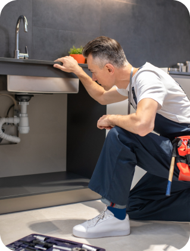
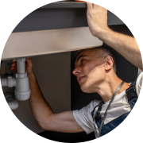
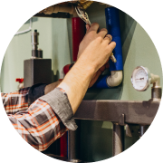
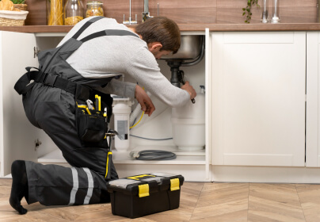

¿Realizan trabajos de plomería en Lanús?
Sí, realizamos servicios de plomería en Lanús para casas, departamentos, comercios, edificios y consorcios.
Servicio de plomería en Lanús para casas, departamentos, comercios, edificios y consorcios
Años de experiencia
Nosotros
En Lanús realizamos trabajos de plomería para edificios, consorcios y departamentos donde suelen presentarse pérdidas, obstrucciones, problemas de presión o necesidades de mantenimiento sanitario en instalaciones antiguas o de uso intensivo.
Reparaciones para edificios y departamentos
Destapaciones y mantenimiento preventivo
Instalaciones sanitarias y recambios
Atención por WhatsApp en Lanús
Servicios de plomería
Detectamos y reparamos pérdidas en cañerías, conexiones, griferías, baños, cocinas, lavaderos y sectores húmedos de edificios y departamentos en Lanús.
Consultar
Realizamos destapaciones de cañerías, desagües, rejillas, piletas, baños, cocinas y sistemas sanitarios en propiedades residenciales y consorcios de Lanús.
ConsultarInstalamos artefactos, griferías, sanitarios, conexiones de agua, desagües y sistemas para baños, cocinas y lavaderos en departamentos y edificios de Lanús.
ConsultarAtendemos problemas de plomería en edificios, consorcios, locales y departamentos, con soluciones enfocadas en mantenimiento y reparaciones duraderas.
ConsultarPor qué elegirnos
Atención para edificios, consorcios, departamentos y mantenimiento preventivo en Lanús.
Trabajamos con comunicación clara, evaluación de cada caso y soluciones pensadas para propiedades donde importan la coordinación, el seguimiento y el cuidado de instalaciones compartidas.
Proceso de trabajo
Recibimos tu mensaje por WhatsApp con fotos, descripción del problema y ubicación dentro de Lanús.

Analizamos el tipo de problema, si se trata de una pérdida, instalación, destapación o reparación.

Te indicamos una orientación clara según el trabajo, materiales necesarios y complejidad del caso.
Coordinamos la visita o el servicio y realizamos el trabajo buscando una solución segura y duradera.
Preguntas frecuentes
Respondemos consultas habituales sobre reparaciones, pérdidas de agua, destapaciones, instalaciones y mantenimiento de plomería para edificios, consorcios y departamentos de Lanús.
Atención profesional
Teníamos una pérdida en el baño y necesitábamos resolverlo rápido. La atención fue clara desde el primer mensaje, nos pidieron fotos por WhatsApp y coordinaron el trabajo sin vueltas. Muy buena predisposición.
En el edificio necesitábamos revisar un problema de cañerías y nos orientaron muy bien antes de avanzar. Fueron prolijos, explicaron el trabajo y dejaron todo funcionando correctamente.
Consultamos por una cañería tapada en la cocina. Respondieron rápido, nos indicaron qué información enviar y coordinaron la visita. El servicio fue claro, práctico y sin complicaciones.
Consejos de plomería
Compartimos recomendaciones sobre mantenimiento, pérdidas de agua, destapaciones e instalaciones sanitarias para hogares, comercios y edificios.

24 Abr 26
Pérdidas de agua
Señales comunes para identificar filtraciones, humedad, baja presión o consumos inusuales antes de que el problema avance.
Leer más20 Abr 26
Destapaciones
Conocé qué síntomas indican una obstrucción en desagües, piletas, baños o cocinas y cuándo conviene pedir asistencia.
Leer más16 Abr 26
Mantenimiento sanitario
Recomendaciones simples para evitar pérdidas, malos olores, obstrucciones y problemas frecuentes en instalaciones sanitarias.
Leer más
Escribinos por WhatsApp con fotos, ubicación y una descripción del problema para orientarte sobre el servicio de plomería en lanús que necesitás.